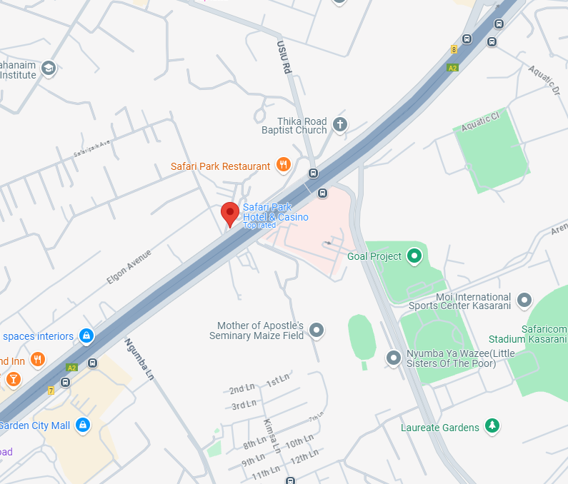
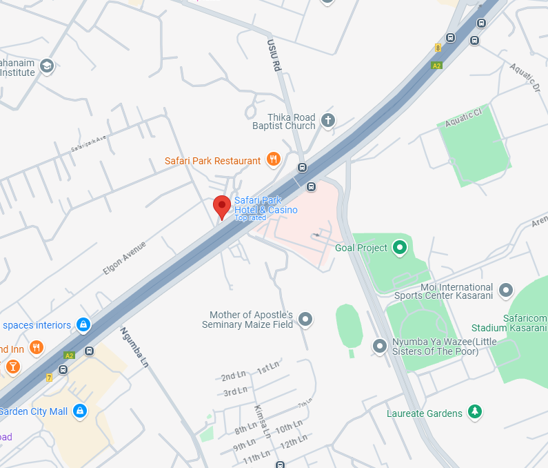

A line crack (also called a long crack) is a straight fracture in the windscreen, typically caused by: impact from debris, sudden temperature changes (thermal stress cracks) and Structural stress from improper installation or pressure. Line cracks spread quickly! If not repaired immediately, they can expand beyond repairable limits, requiring a full windscreen replacement.
A bullseye crack is a circular break in the windscreen with a dark center, caused by an impact from a rock or debris. It resembles a dartboard bullseye and is one of the most common types of windscreen damage. It can spread into larger cracks due to temperature changes and vibrations. It can weaken the windscreen, increasing the risk of shattering. Easier to repair when small (under a coin size).
A type of windscreen damage that looks like a starburst, with multiple small cracks radiating from a central impact point. It’s usually caused by a small rock or debris hitting the glass at high speed. The cracks can spread quickly due to vibrations, temperature changes, and pressure. If left untreated, the damage can become too large for repair, requiring a full windscreen replacement.
A stone chip is a small break in the windscreen caused by debris, usually gravel or small rocks, hitting the glass at high speed. It often appears as: a circular break with a dark center, small cracks radiating outward or a semi-circular break. Although it doesn't spread/grow as fast as a line break, repair it early will help prevent replacing the entire windscreen.
 

Buruburu phase 1 along Rabai road next to Rubis
 +254 729 521 420
+254 729 521 420
 +254 729 521 420
+254 729 521 420
 clearviewwindscreen@gmail.com
clearviewwindscreen@gmail.com


© Clearview Windscreen Repairs 2025. Powered by Devaio